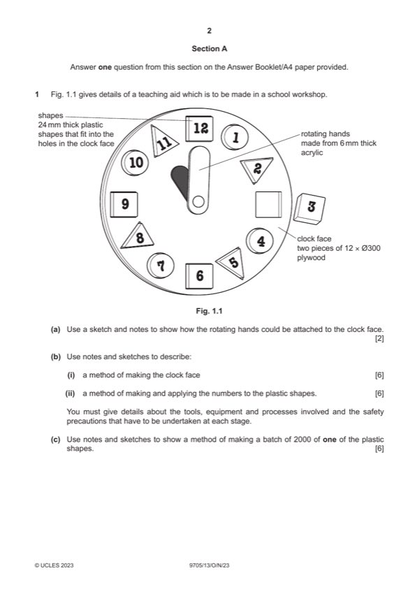

Question 1

Original paper page 2
Part 1(a) — solution
Exemplar answers: 2
Hands attached to the clockface [1] but method allows them to rotate
e.g. a screw mechanism [1]
0–2
Mark points
- Include the ideas shown in the solution above.
Part 1(b)(i) — solution
Marking out and cutting to shape and joining 6 Accept CAD/CAM techniques.
Suitable method [0–3] e.g. pencil, try square, compass …
Tools, equipment or processes
Suitable method [0–2] e.g. coping saw, band saw, filing, sanding, drilling
Safety precaution [0–1]
0–6
Mark points
- Include the ideas shown in the solution above.
Part 1(b)(ii) — solution
Method of making and applying the numbers 6 Other acceptable methods include:
Suitable method [0–3] e.g. CAD for vinyl, plastic memory technique...
Tools, equipment or processes • stencil
Suitable method [0–2] e.g. use of a vinyl cutter
Safety precaution [0–1]
0–6
Mark points
- Include the ideas shown in the solution above.
Part 1(c) — solution
Sketches and/or notes show: 6
Method of making a batch of 2000 of one the plastic shapes
Suitable method [0–3] e.g. injection moulding, laser cutter
Tools, equipment or processes [0–3]
0–6
2023 Page 4 of 16
9705/13 Cambridge International AS & A Level – Mark Scheme October/November 2023
Guidance
Mark points
- Include the ideas shown in the solution above.